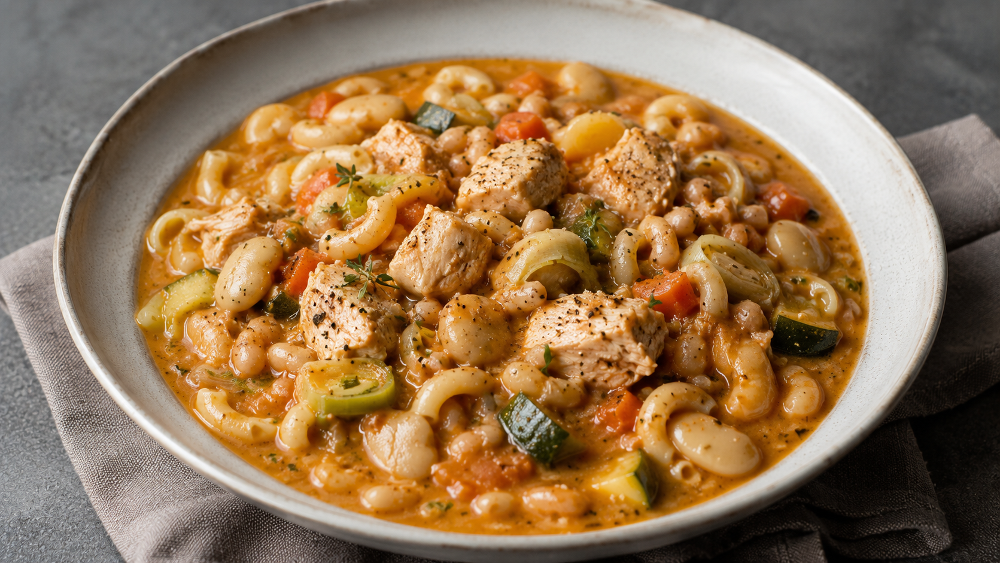

A comforting one pot chicken stew made with white beans, butter beans, leek, zucchini, carrot, elbow macaroni, tomato sauce, and Dijon mustard.
The beans make the broth creamy, the leek adds gentle sweetness, and the Dijon mustard gives the stew a subtle savory depth.
Serves: 2 to 3 portions
Preparation Time: 15 minutes
Cooking Time: 40 minutes
Wash the leek thoroughly, as soil can often be trapped between the layers. Slice it lengthways, rinse between the layers, then cut it into thin half moons.
Finely chop the onion and garlic. Dice or thinly slice the carrot. Dice the zucchini into medium pieces.
Cut the chicken into small pieces, if it is not already prepared.
Drain the white beans and butter beans, then rinse them well under cold water to remove some of the salt from the canning liquid.
Estimated time: 15 minutes
Heat the olive oil in a medium or large saucepan over medium heat.
Add the onion, leek, and carrot. Cook for 7 to 10 minutes, stirring occasionally, until the vegetables soften and the leek becomes sweet and fragrant.
Avoid adding salt at this stage, or use only a very tiny pinch, because the canned beans and Dijon mustard may already contain salt.
Estimated time: 10 minutes
Add the chopped garlic, bay leaf if using, paprika, and black pepper.
Cook for 30 to 60 seconds, stirring often, just until the garlic is fragrant. Be careful not to let it burn.
Estimated time: 1 minute
Add the chicken to the pan and stir it well into the aromatic base.
Cook for 5 to 7 minutes, stirring occasionally, until the chicken loses its raw color and begins to take on a little color.
The chicken does not need to be fully cooked at this stage, as it will continue cooking in the stew.
Estimated time: 5 to 7 minutes
Add the tomato sauce and Dijon mustard to the pan in equal amounts.
Stir well so the mustard melts into the tomato sauce and coats the chicken and vegetables.
Cook for 1 to 2 minutes to deepen the flavor before adding the water.
Estimated time: 1 to 2 minutes
Add 700 ml of water and stir well, scraping the bottom of the pan to release any flavor from the vegetables and chicken.
Bring to a gentle simmer, then partially cover the pan and cook over medium low heat for 12 to 18 minutes, until the chicken is fully cooked through.
The chicken should be fully cooked in the center, with no pink parts remaining.
Estimated time: 12 to 14 minutes
Add the drained and rinsed white beans and butter beans.
For a creamier broth, gently crush some of the beans against the side of the pan with a spoon.
Let the stew simmer for 5 minutes so the beans warm through and begin to thicken the broth.
Estimated time: 5 minutes
Add the elbow macaroni and diced zucchini.
Cook for 8 to 10 minutes, stirring occasionally, until the macaroni is just tender.
If the stew becomes too thick, add a little more hot water. Aim for a creamy stew with some broth, not a dry pasta dish.
Estimated time: 8 to 10 minutes
Taste the stew and adjust only if needed.
If it needs more flavor, add black pepper, paprika, chili flakes, fresh parsley, or cilantro before adding more salt.
Add salt only at the end, and only if the dish really needs it.
Turn off the heat and let the stew rest for 5 minutes before serving. The macaroni will continue to absorb some broth as it sits.
Estimated time: 5 minutes
Serve warm in bowls, with a drizzle of olive oil and fresh parsley or cilantro on top, if desired.
For a brighter finish, add a few drops of lemon juice just before serving. This can help balance the richness of the beans, chicken, and Dijon mustard.
Dijon mustard is naturally salty and sharp, so add salt only at the end after tasting.
Rinsing the canned beans helps reduce excess salt and removes some of the canning liquid flavor.
Use water rather than stock if you want more control over the salt level.
For leftovers, the macaroni will continue to absorb liquid in the fridge. When reheating, add a splash of water and warm gently until the stew loosens again.
For a thicker result, use 80 g of macaroni. For a more brothy and lighter result, use 70 g.